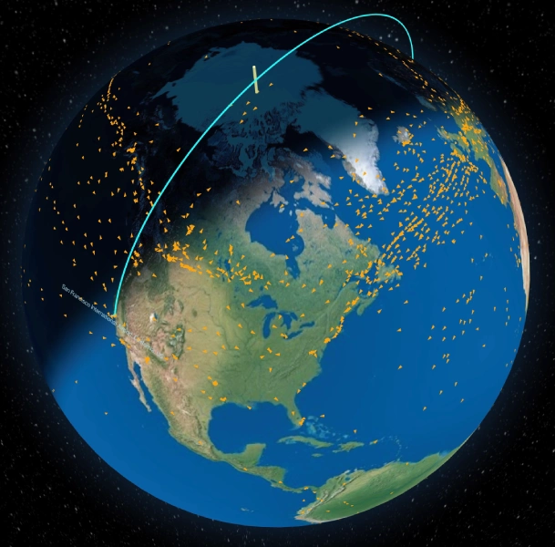
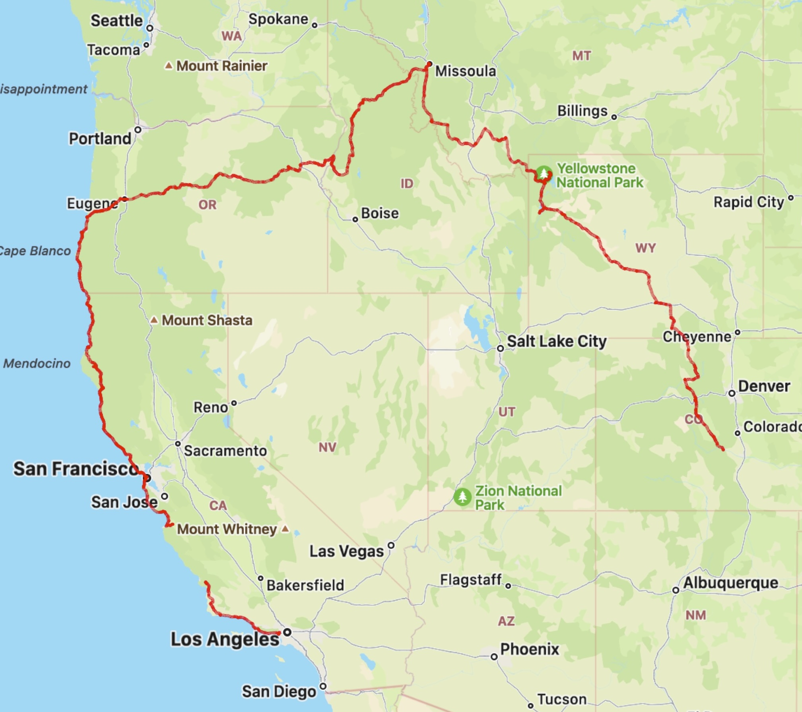
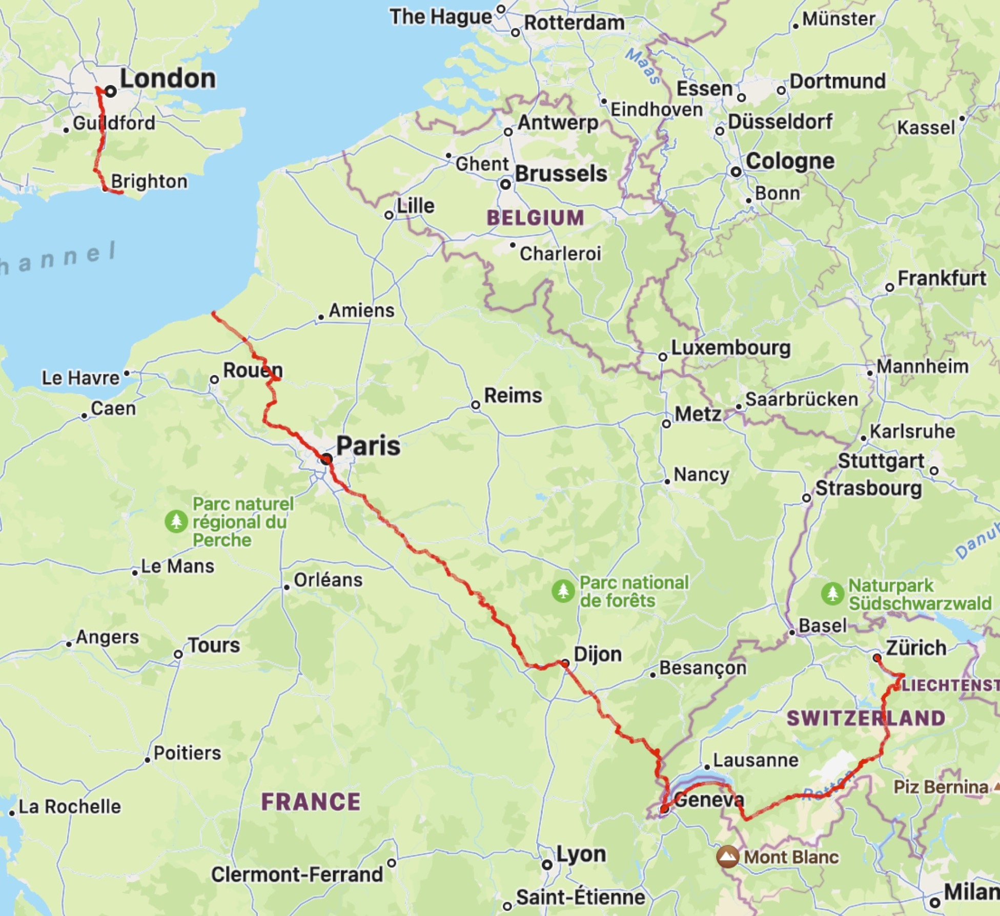

Hi! 😊
I'm Copeland — British-American software engineer!
I have a passion for software infrastructure, having started a home server in high school on a tiny 2GB Debian machine (which is back in use as a K8s worker node!) and now Kubernetes on Ubuntu with the associated CNCF-approved FluxCD + Linkerd + PromStack setup.
A recent personal project: the problem with flight tracking websites is that they only show a 2D map, which distorts the flightpaths into curves over long distances, when in reality it's flying in a straight line around the globe. So I made the FIRST (!) ever 3D globe flight tracker: globular-adsb.copey.dev

Here's a fun video I made — an intense race to get a proxy server running to keep dog TV online! I figured out the process before shooting so it is a "real stunt"!
And a project I did based on the fantastic TV show Severance: wellness.copey.dev It's a parodic take on the "Wellness Sessions" the severed employees get at work, where they have no memory of their life on the outside — their "Outie". The site is static JS (now I appreciate why TypeScript exists) and uses a CRT-style WebGL shader. The speech was generated with a finetuned fish-speech model. I wanted to use a local Gemma2 LLM to generate the lines on the fly but they (ironically, given the character's name is Gemma) weren't good enough!
Creating a natural language interface for a Kerbal Space Program drone:
Outside of computers I'm a big cyclist — mountain biking and bike touring:
Last summer I rode 3030 miles from the Front Range of the Colorado Rockies to LA via Wyoming, Montana, Idaho, Oregon and the Pacific Coast!

I wrote a blog documenting the trip on biking.copey.dev
And made a video montage out of clips of the ride, set to U2:
And last year I rode 900 miles from London to Zürich via Paris, Dijon, Geneva and the Alps:

POV descent down the stunning Furkapass, the location where they shot the Alpine shootout in the classic James Bond film Goldfinger:
Here's a couple aviation-related video edits I made in Resolve: